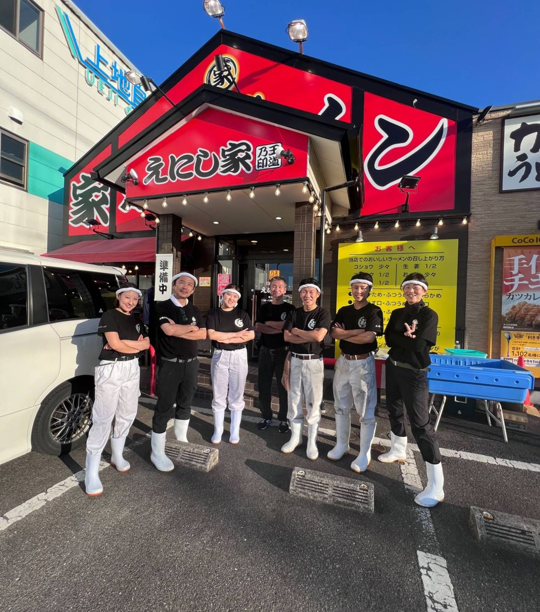
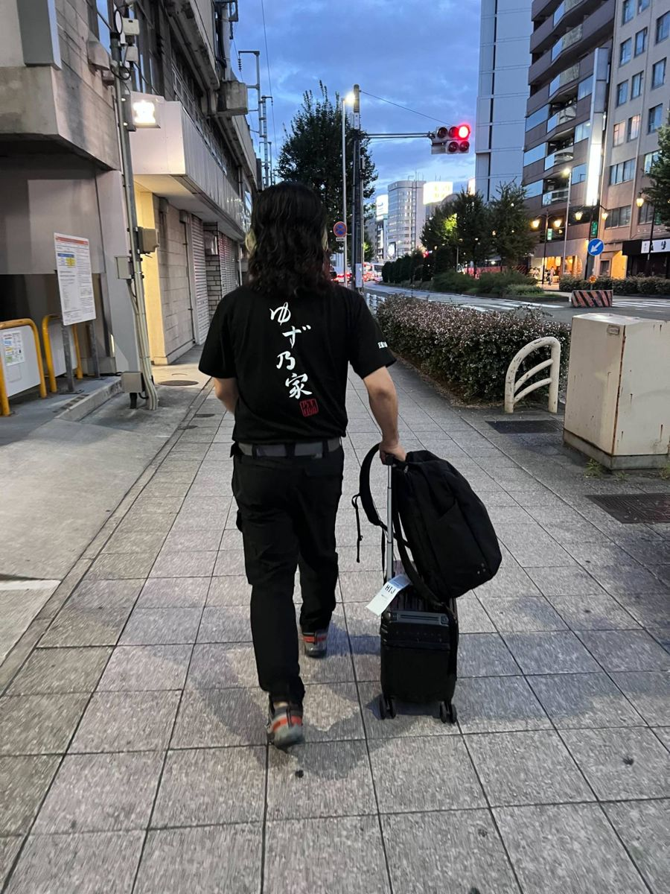
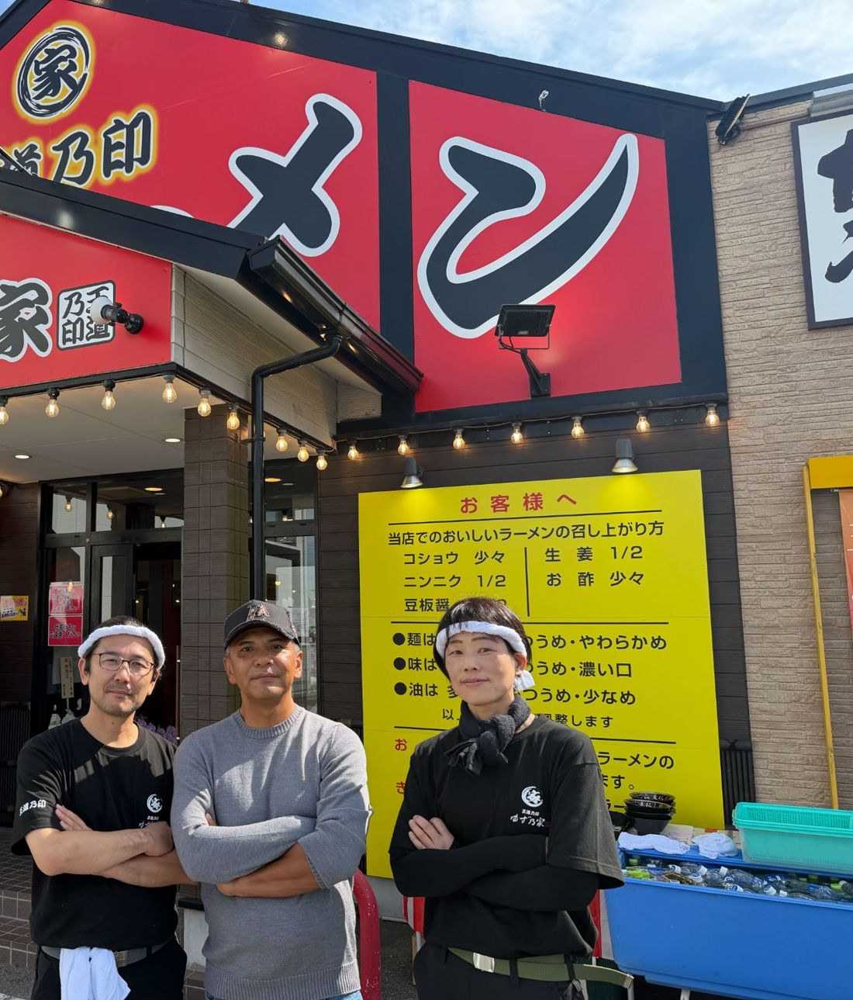

スタッフ募集中広島県初上陸
王道家の味を、
福山で一緒に。
福山市緑町に開店する家系ラーメン「王道乃印 ゆず乃家」が、開店に向けて一緒に働く仲間を募集しています。
2027年1〜2月 オープン予定広島県福山市緑町2-1-8
公式LINEで求人に問い合わせる
仕事内容・時間・給与は、LINEでお気軽にどうぞ
FOR YOUこんな方からの
こんな方からの
ご連絡を待っています
- 家系ラーメンが好きで、作る側にも興味がある
- 新しいお店の立ち上げに、最初から関わってみたい
- 福山市内で、働く場所を探している
- 応募の前に、まずは話だけ聞いてみたい
まずは公式LINEで、
気軽に声をかけてください。
TEAM開店に向けて、
開店に向けて、
厨房に立っています
ゆず乃家のメンバーは、王道乃印の店「えにし家」の厨房に立ち、開店に向けた準備を進めています。この輪に、福山で一緒に加わってくれる方を探しています。


RECRUIT
スタッフ募集
2027年1〜2月の開店に向けて、ゆず乃家で一緒に働く仲間を募集しています。詳しい内容は、公式LINEでお答えします。
- お店
- 家系ラーメン 王道乃印 ゆず乃家
- 勤務地
- 広島県福山市緑町2-1-8
バス停「緑町」から徒歩1分 - 開店
- 2027年1〜2月 予定
- 条件
- 仕事内容・勤務時間・給与は、公式LINEでお問い合わせください
- 下のボタンから、ゆず乃家の公式LINEを友だち追加
- トークで「求人について」と送る
- 仕事内容や時間など、気になることをお聞きください
ABOUT
「王道乃印」とは

王道家の流れを受け継ぐ、
家系ラーメンのブランド。
王道家・清水裕正社長が
手掛ける「王道乃印」。
家系ラーメン店「王道家」。その清水裕正社長が手掛けるブランドが「王道乃印」です。
ゆず乃家は、その「王道乃印」の店として、広島県で初めて福山市に開店します。
01
王道家の流れをくむ一杯
王道家の清水社長が手掛ける「王道乃印」の家系ラーメンを、福山で。
02
広島県で初めての「王道乃印」
県外まで行かなくても、福山市内で食べられるようになります。
03
バス停「緑町」から徒歩1分
JR福山駅からは約1.7km。バスなら停留所の目の前です。
ACCESS
お店の場所
- 店名
- 家系ラーメン 王道乃印 ゆず乃家
- 住所
- 〒720-0804
広島県福山市緑町2-1-8 - アクセス
- バス停「緑町」から約22m（徒歩1分）
JR福山駅から約1.7km（徒歩22分） - オープン
- 2027年1〜2月 予定
- 運営
- 株式会社ハートランド
同じ経営者が運営しています
社会福祉法人ゆず
ゆず乃家の経営者は、東広島市で「地域密着型特養ゆずの家」などを運営する社会福祉法人ゆずも手掛けています。
社会福祉法人ゆずのホームページを見る
https://yuzunoya.or.jp/